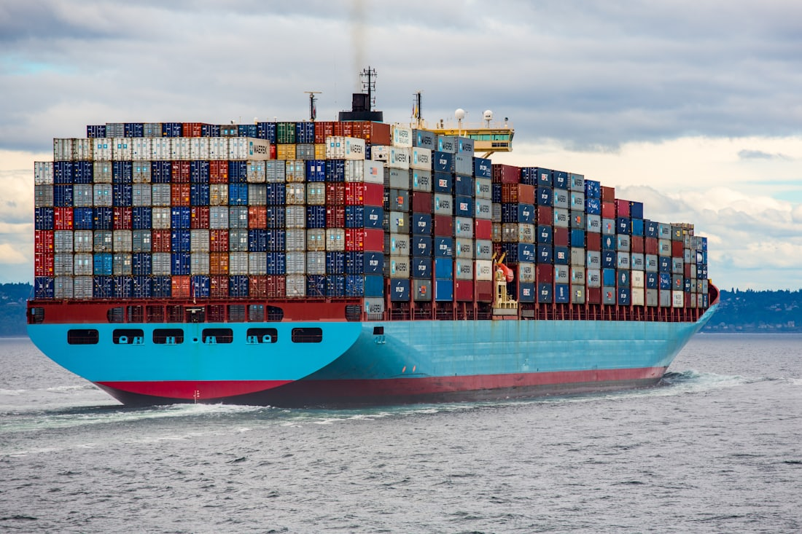
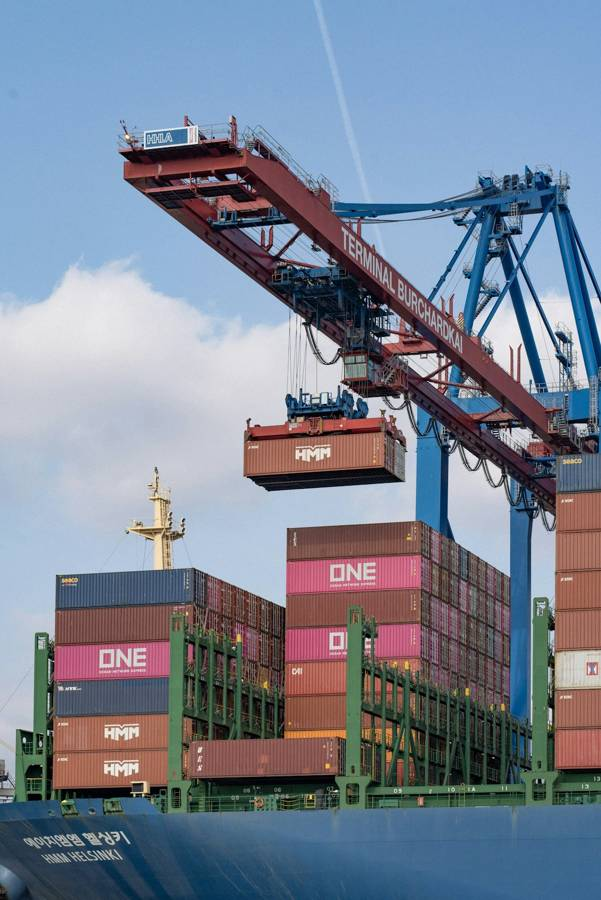
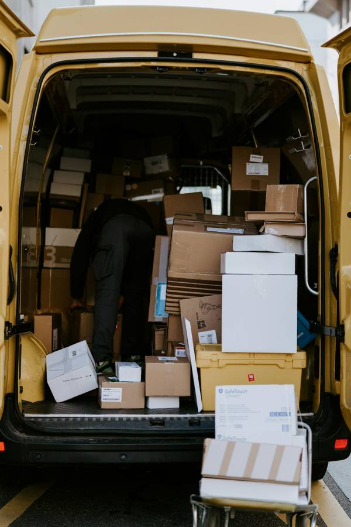
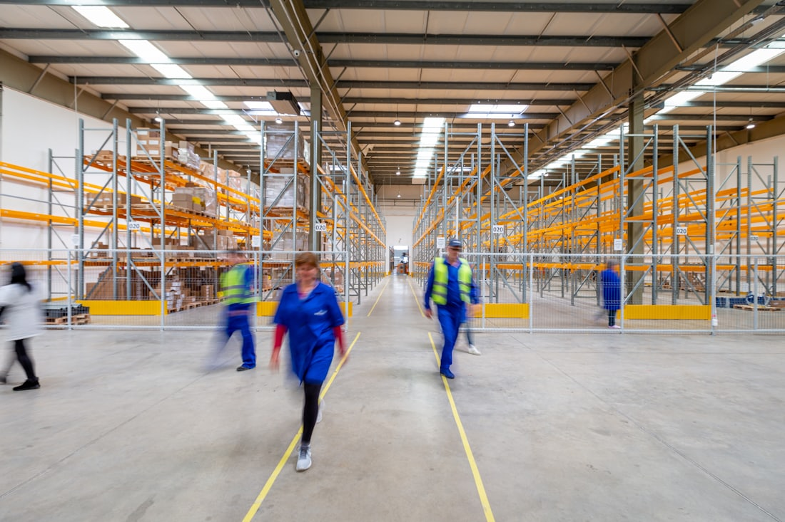

Supply chain depth, end to end
Order-to-cash, order management, distribution, purchasing / AP and inventory — plus ocean freight, port operations and last-mile execution earlier in the career. One continuous view of the chain, not a slice of it.
Supply chain product & AI — always open to a good conversation
Prabin Mishra · Senior Product Owner / Product Manager · Supply Chain & Logistics
Fifteen years spent where the freight is — ocean and ports with Maersk, UPS and DHL Global Forwarding, Nordic last-mile with PostNord, and today the distribution ERP running the warehouse, the yard and the order book at Epicor BisTrack Web — amplified by a hands-on AI toolkit of Custom GPTs and Copilot Studio agents.
Impact
Every figure below is verifiable in the roles that follow.
1,400+
user-story backlog owned
prioritized end-to-end at Epicor
~6,000
API endpoints
across 1,000 API groups — flagship platform
$50M
business case adopted
led to a customer deal at TCS
10,000
daily users served
up to, across 3 countries
500–2,000
global customers
on Epicor BisTrack Web, live SaaS ERP
50+
branches live on the web product
across 20+ customers, post-migration
Why me
Order-to-cash, order management, distribution, purchasing / AP and inventory — plus ocean freight, port operations and last-mile execution earlier in the career. One continuous view of the chain, not a slice of it.
Vision, roadmap, backlog, release planning. Squads of 10–20 engineers — plus a business-analyst and design team built and trained from scratch. Platforms in the hands of up to 10,000 drivers, planners and depot staff daily across 3 countries.
Stacked AI / PM certifications plus real internal AI tooling built and adopted — Custom GPTs, Copilot Studio agents, and an AI agent that automates API spec authoring for a 6,000-endpoint supply chain platform.
Supply chain & logistics, proven with the industry's biggest names
Delivered through TCS Transportation Practice & Nordic engagements, 2015–2021
Supply chain
Five links in the physical chain. I have shipped product against every one of them — with the operators whose names are on the containers, the vans and the loading docks.

Order-to-cash and record-to-report process consulting for global carriers and forwarders, plus a $50M business case for digitizing transport documents across shipping, port operators and postal logistics.
MaerskUPSDHL Global ForwardingAET Tankers

Requirements and product definition against terminal and port-operator workflows — the gate, the yard and the paperwork that moves a box from vessel to inland leg without stopping the crane.
Port operatorsTransport-document digitizationSingapore & Houston
The day job: inventory, stock receipts, purchasing / AP automation and order management inside a live cloud ERP for wholesale distribution and building materials — 500–2,000 global customers on it right now.
Epicor BisTrack WebEDI stock receiptsAP automationInventory
Distribution planning products for a national carrier network — route and journey planning, load building and depot execution, tuned against loading efficiency and on-road KPIs.
4% faster loading per parcelJourney planning +4%3 countries

Owned 2–4 simultaneous iOS / Android and web products for last-mile execution at the Nordic CEP leader — in the hands of up to 10,000 daily users, with failed deliveries driven down by root-cause work on live KPIs.
PostNord6% fewer failed deliveries10,000 daily users
Every role has been the same problem in a different costume: a physical operation with real constraints, and software that either respects them or gets worked around on the floor.
OceanPortWarehouseLine-haulDoorstep
Progression
Five steps up, and one deliberate pause to retool. Each step added a layer of ownership — first the system, then the analysis, then the product, then the team, then the platform.
Step 1 · Operate 2010 – 2014
Learned how enterprise systems actually fail — on call, in production, at the scale of the world's largest automaker.
320+ middleware interfaces 24×7 near-zero downtime Offshore team lead
Pivot · Retool 2014 – 2015
Stepped out of delivery on purpose, to come back on the business side of the table.
CGPA 3.6 / 4 Magna Cum Laude · Dean's List Marketing · Business Analytics
Step 2 · Analyse 2015 – 2018
From running one client's systems to shaping what a whole industry should buy — and proving it in a business case.
$50M business case adopted 10+ strategic customers Maersk · UPS · DHL GF · AET
Step 3 · Own a product 2018 – 2021
First time the roadmap was mine — and the KPIs were measured by couriers at the door, not by a slide.
2–4 products owned 10,000 daily users · 3 countries PostNord
Step 4 · Lead teams Apr – Sep 2021
Manager grade, leading consulting teams rather than carrying a workstream — across three regulated industries at once.
Consulting teams led Maturity assessments Pharma · retail · US healthcare
Step 5 · Own a platform Sep 2021 – Present Current
From owning a product to owning the platform under it — and from directing a squad to building one: the web product is live at 50+ branches, the team that migrated it was assembled and trained here, and the API platform is in controlled release.
Live at 50+ branches · 20+ customers 1,400+ story backlog owned BA & design team built and trained ~6,000 API endpoints 10–20 engineers directed
Titles are only half the story — the other half is below, role by role, and in the five builds that made the case.
Experience
One throughline: complex supply chain operations turned into product. Select any role to expand the detail.

Projects
The work behind the timeline, each one as a hiring manager reads it: the problem, what I did about it, and the number at the end.
Side projects
Proof of the builder habit — defined, designed and shipped end-to-end.
Built from scratch to track household income, expenses, savings goals and budgets — data model, taxonomy and reporting views defined end-to-end.
Open-source public-accountability dashboard tracking the Indian PM's foreign visits, diplomatic costs and outcomes. Built end-to-end in HTML.
View on GitHubAn AI-forward résumé: the "Ask my résumé" panel answers from a structured knowledge base entirely in your browser — no backend, no trackers. Hand-built HTML / CSS / JS.
View the sourceSkills
Credentials
Scrum.org
Vanderbilt · 2025
Vanderbilt · 2025
LinkedIn Learning · 2025
Scrum.org
Scrum Alliance
Pendo.io · 2025
Microsoft · 2022
Plus: CSCMP Supply Chain Foundations · ITIL v3 Foundation · IIBA-endorsed Business Analysis · Corporate Finance Essentials (IESE / Coursera)
2014–2015 · CGPA 3.6 / 4 · Magna Cum Laude · Dean's List
Major: Marketing · Minor: Business Analytics
2006–2010 · CGPA 8.55 / 10 · Honours
Software for the supply chain earns its keep on the dock, in the yard and at the door — never in the deck.
Contact
If you're building for supply chain, logistics or the ERP underneath them — or putting applied AI to work on any of it — I'd genuinely enjoy comparing notes, in Bengaluru or wherever in the world great product gets built.
Ask my résumé
Runs in your browser — answers only from the verified profile on this page.